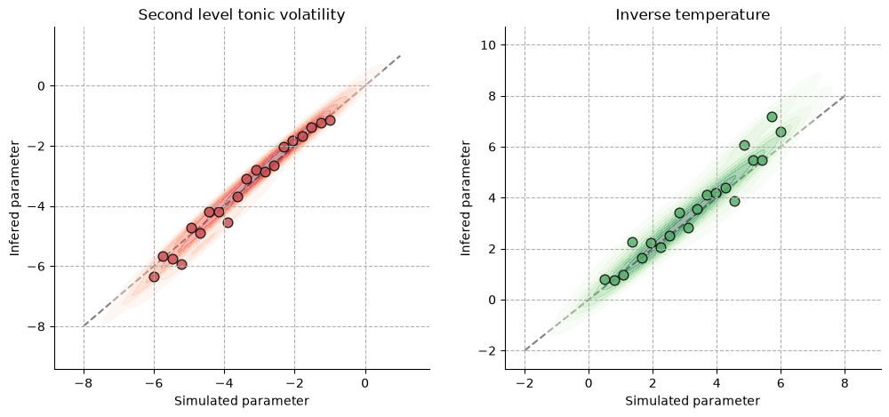

Recovering computational parameters from observed behaviours#

import jax
# Enable 64-bit precision so JAX matches PyTensor's float64 graphs and avoids
# dtype-truncation warnings when the network is wrapped for PyMC.
jax.config.update("jax_enable_x64", True)
import matplotlib.pyplot as plt
import numpy as np
import pymc as pm
import seaborn as sns
from jax import vmap
from pytensor import wrap_jax
from pyhgf import load_data
from pyhgf.math import sigmoid_inverse_temperature
from pyhgf.model import Network
from pyhgf.response import binary_softmax_inverse_temperature
np.random.seed(123)
An important application of Hierarchical Gaussian Filters consists in the inference of computational parameters from observed behaviours, as well as the inference of data-generating models (e.g. are the participants answering randomly or are they learning environmental volatilities that are better approached with a Rescorla-Wagner or a Hierarchical Gaussian Filter?). Parameter recovery refers to the ability to recover true data-generating parameters; model recovery refers to the ability to correctly identify the true data-generating model using model comparison techniques. It is often a good idea to test parameter/model recovery of a computational model using simulated data before applying this model to experimental data [Wilson and Collins, 2019]. In this tutorial, we demonstrate how to recover some parameters of the generative model of the Hierarchical Gaussian Filter.
Simulate behaviours from a one-armed bandit task#
Using a given task structure, we simulate behaviours from a group of participants assuming that they are updating beliefs of environmental volatility using a two-level Hierarchical Gaussian Filter, using a simple sigmoid as a response function parametrized by an inverse temperature parameter. For each participant, the inverse temperature and the tonic volatility at the second level are free parameters that will be estimated during the inference step.
u, _ = load_data("binary") # the vector encoding the presence/absence of association
N = 20 # the number of agents to simulate
# sample one value for the inverse temperature
temperatures = np.linspace(0.5, 6.0, num=N)
# sample one new value of the tonic volatility at the second level
volatilities = np.linspace(-6.0, -1.0, num=N)
# create just one default network - we will simply change the values of interest before fitting to save time
agent = Network().add_nodes(kind="binary-state").add_nodes(value_children=0)
# observations (always the same), simulated decisions, sample values for temperature and volatility
responses = []
for i in range(N):
# set the tonic volatility for this agent and run the perceptual model forward
agent.attributes[1]["tonic_volatility"] = volatilities[i]
agent.input_data(input_data=u)
# get decision probabilities using the belief trajectories
# and the sigmoid decision function with inverse temperature
p = sigmoid_inverse_temperature(
x=agent.node_trajectories[0]["expected_mean"], temperature=temperatures[i]
)
# save the observations and decisions separately
responses.append(np.random.binomial(p=p, n=1))
responses = np.array(responses)
Inference from the simulated behaviours#
def participant_logp(tonic_volatility, inverse_temperature, responses):
"""Log-probability of a single participant's responses.
Build a two-level binary HGF, feed it the (shared) input sequence `u` and
return the log-probability of the participant's decisions under the binary
softmax response model, summed over observations.
"""
return -(
Network()
.add_nodes(kind="binary-state")
.add_nodes(value_children=0, tonic_volatility=tonic_volatility)
.input_data(input_data=u)
.surprise(
response_function=binary_softmax_inverse_temperature,
response_function_inputs=responses,
response_function_parameters=inverse_temperature,
)
).sum()
@wrap_jax
def two_level_logp(tonic_volatility, inverse_temperature):
"""Total log-probability across all participants (a scalar).
``vmap`` applies :func:`participant_logp` to the ``N`` participants in
parallel, mapping over the per-participant tonic volatilities, inverse
temperatures and responses, and the per-participant log-probabilities are
summed.
"""
return vmap(participant_logp)(
tonic_volatility, inverse_temperature, responses
).sum()
Here, we are not assuming hyperpriors to ensure that individual estimates are independent and avoid hierarchical partial pooling.
with pm.Model() as two_levels_binary_hgf:
# tonic volatility
volatility = pm.Normal.dist(-3.0, 5, shape=N)
censored_volatility = pm.Censored(
"censored_volatility", volatility, lower=-8, upper=2
)
# inverse temperature
inverse_temperature = pm.Uniform(
"inverse_temperature", 0.2, 20, shape=N, initval=np.ones(N)
)
# The multi-HGF log-probability
# -----------------------------
pm.Potential(
"hgf_loglike",
two_level_logp(censored_volatility, inverse_temperature),
)
with two_levels_binary_hgf:
two_level_hgf_idata = pm.sample(chains=2, cores=1)
Initializing NUTS using jitter+adapt_diag...
/home/runner/work/pyhgf/pyhgf/.venv/lib/python3.12/site-packages/pytensor/link/numba/dispatch/basic.py:214: UserWarning: Numba will use object mode to run JAXOp{input_types=(TensorType(float64, shape=(20,)), TensorType(float64, shape=(20,)), TensorType(float64, shape=())), output_types=(TensorType(float64, shape=(20,)), TensorType(float64, shape=(20,))), jax_func=<function JAXOp.pullback.<locals>.vjp_operation at 0x7f29b4839f80>}'s perform method. Set `pytensor.config.compiler_verbose = True` to see more details.
warnings.warn(
/home/runner/work/pyhgf/pyhgf/.venv/lib/python3.12/site-packages/pytensor/link/numba/dispatch/basic.py:214: UserWarning: Numba will use object mode to run JAXOp{input_types=(TensorType(float64, shape=(20,)), TensorType(float64, shape=(20,))), output_types=(TensorType(float64, shape=()),), jax_func=<function wrap_jax.<locals>.decorator.<locals>.wrapper.<locals>.flattened_function at 0x7f29b4baad40>}'s perform method. Set `pytensor.config.compiler_verbose = True` to see more details.
warnings.warn(
Sequential sampling (2 chains in 1 job)
NUTS: [censored_volatility, inverse_temperature]
Sampling 2 chains for 1_000 tune and 1_000 draw iterations (2_000 + 2_000 draws total) took 92 seconds.
There were 879 divergences after tuning. Increase `target_accept` or reparameterize.
We recommend running at least 4 chains for robust computation of convergence diagnostics
The rhat statistic is larger than 1.01 for some parameters. This indicates problems during sampling. See https://arxiv.org/abs/1903.08008 for details
Visualizing parameters recovery#
A successful parameter recovery is usually inferred from the scatterplot of simulated values and inferred values of the parameters. Here, we can see that the model can recover fairly accurate values close to the underlying parameters. Additionally, we can report the coefficient of correlation between the two variables, as a more objective measure of correspondence.

System configuration#
%load_ext watermark
%watermark -n -u -v -iv -w -p pyhgf,jax,jaxlib
Last updated: Tue, 16 Jun 2026
Python implementation: CPython
Python version : 3.12.13
IPython version : 9.14.1
pyhgf : 0.3.0
jax : 0.4.31
jaxlib: 0.4.31
IPython : 9.14.1
jax : 0.4.31
matplotlib: 3.11.0
numpy : 2.4.6
pyhgf : 0.3.0
pymc : 6.0.1
pytensor : 3.0.7
seaborn : 0.13.2
Watermark: 2.6.0